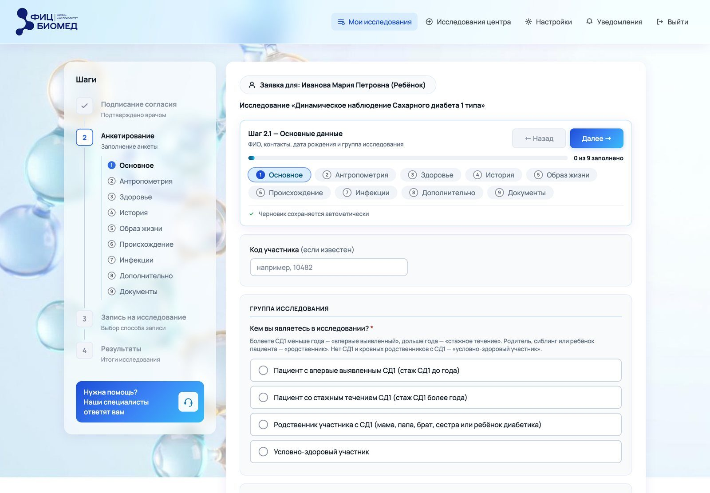
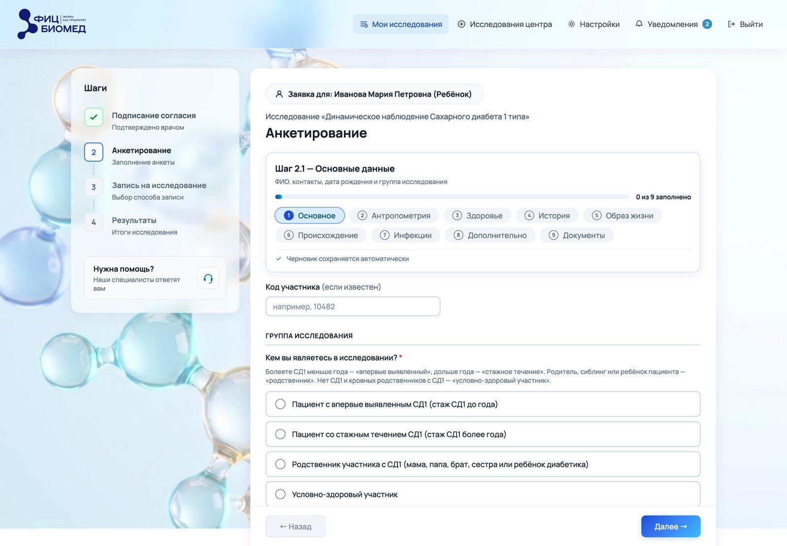
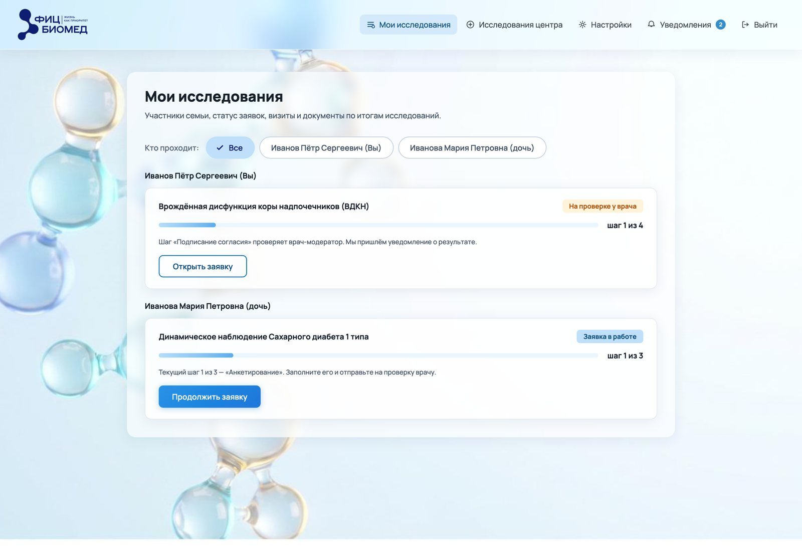
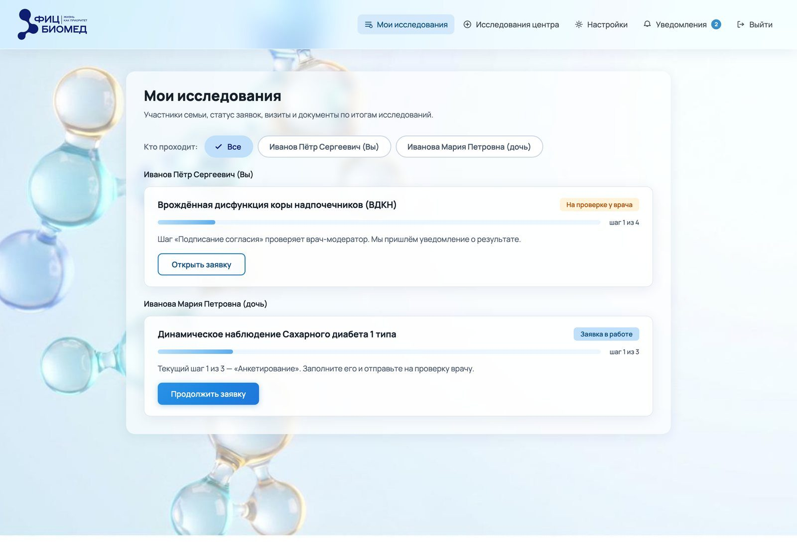

6. Интерфейс
В этой главе
Визуальная часть интерфейса отвечает за то, чтобы человек быстро понял, что на экране главное, что можно сделать и что сейчас происходит. Красота здесь следствие порядка.
Иерархия и фокус
На каждом экране есть одна главная задача. Всё остальное по весу ей уступает. Вес элемента складывается из размера, цвета, контраста, места на экране и числа повторов.
Проверка фокуса:
- Прищуриться или размыть снимок экрана. Что видно первым? Почему: при размытии исчезают слова, и остаётся только вес элементов, как его видит периферийное зрение.
- Совпадает ли это с главным действием экрана?
- Сколько элементов спорят за внимание?




«Заметно, но не главное»
Самая трудная задача иерархии: элемент должен быть заметен и при этом не перетягивать фокус.
Сетка и отступы
Сетка делает экран предсказуемым. Основные решения:
- Шаг сетки. Обычно 4 или 8 px: все отступы и размеры кратны шагу. Почему: общий шаг делает расстояния предсказуемыми, и разные дизайнеры получают одинаковый ритм.
- Колонки. На десктопе часто 12, на планшете 8, на телефоне 4. Почему: деление на 12 даёт половины, трети и четверти, на узком экране колонок меньше, иначе они слишком узкие.
- Гаттер. Расстояние между колонками, обычно 16–24 px. Почему: одинаковый гаттер держит блоки на одной сетке, и экран не выглядит случайным.
- Поля страницы. На телефоне не меньше 16 px. Почему: текст у самого края экрана трудно читать, а палец задевает края корпуса.
Отступы показывают связь: близкие элементы воспринимаются как группа (закон близости из гештальт-психологии). Внутри группы отступ меньше, между группами больше.
Типографика
Подробно о шрифтах, с причинами каждого правила, в главе 7.
Типографика интерфейса решает две задачи: читаемость и иерархию.
Правила:
- Основной текст 14–16 px на десктопе, на телефоне в полях ввода не меньше 16 px: иначе iOS увеличивает форму при фокусе.
- Мелкие подписи не меньше 12 px. Почему: мельче читается с трудом, особенно людьми старшего возраста.
- Межстрочный интервал для основного текста около 1,4–1,5 от кегля. Чем мельче заголовок, тем больше нужен запас по интерлиньяжу, чтобы длинные названия не слипались при переносе.
- Шкала ролей. Каждый уровень текста описан ролью (заголовок страницы, заголовок карточки, основной текст, подпись) с кеглем, строкой и начертанием. Почему: дизайнер выбирает роль, размер к ней уже привязан, и одинаковые вещи выглядят одинаково на всех экранах.
- Начертаний немного. Соседние начертания на одном кегле (500, 600, 700) плохо различаются глазом. Почему: если глаз не видит разницы, разница бесполезна и только создаёт шум.
| Роль | Кегль / строка | Начертание |
|---|---|---|
| Заголовок страницы и мастера | 26 / 32 | 800 |
| Заголовок главной карточки, окна | 18 / 24 | 700 |
| Заголовок карточки в списке, секции | 16 / 24 | 700 и 600 |
| Подзаголовок, группа, вопрос | 14 / 20 | 600 |
| Основной текст | 14 / 20 | 400 |
| Подпись поля, пункт меню | 14 / 20 | 500 |
| Подпись, счётчик | 12 / 16 | 500 |
| Бейдж, шапка таблицы | 12 / 16 | 600 |




Цвет
Цвет в интерфейсе несёт смысл. Поэтому начинают с ролей, а оттенки подбирают потом.
Типичные роли:
| Роль | Где |
|---|---|
| Основной (бренд, действие) | Главная кнопка, ссылки, выбранное |
| Нейтральные | Текст, фон, рамки, подложки |
| Успех | Готово, принято |
| Предупреждение | Особенность процесса, внимание |
| Ошибка | Ошибка и опасное действие |
| Информация | Справка, подсказка |
Правила:
- Одна роль, один вид. Если «выбрано» показано шестью способами, человек не узнаёт его.
- Один цвет, один смысл. Оранжевый в пяти смыслах перестаёт что-либо значить.
- Красный только для ошибки и опасного действия. Почему: если красный значит и ошибку, и пустое поле, человек перестаёт отличать опасное от незаконченного.
- Цвет не единственный носитель смысла. Рядом всегда текст или иконка: часть людей цвет не различает.
- Основной цвет не совпадает со статусом. Если главная кнопка зелёная, её путают с «успехом».
Шкалы цвета
Цвет задают шкалой ступеней (например, 50–900) и ролями, которые ссылаются на ступени. Так легко сделать тёмную тему и проверить контраст: проверяется пара ролей, и перебирать экраны не нужно.
Контраст
Минимум по WCAG 2.1 уровня AA:
| Что | Минимум |
|---|---|
| Обычный текст | 4,5 : 1 |
| Крупный текст (от 18 pt или 14 pt жирным, это примерно 24 px и 18,7 px) | 3 : 1 |
| Границы полей, иконки, элементы управления | 3 : 1 |
Подробнее в главе 13.
Кнопки
У кнопок несколько уровней веса: главная, второстепенная, текстовая, опасная. Правила:
- Одна главная кнопка на экран или блок. Почему: две равные главные кнопки заставляют человека думать, какая из них правильная.
- Вид кнопки задаёт действие, а экран на него не влияет. Одно и то же действие везде выглядит одинаково. Почему: человек узнаёт действие по виду, и разный вид одного действия сбивает.
- «Отмена» нейтральная. Никогда не яркая и не красная. Почему: яркая «Отмена» спорит с главным действием и выглядит опасной.
- Опасное действие тише главного. Удаление аккаунта не должно весить столько же, сколько «Продолжить». Почему: случайное нажатие опасной кнопки стоит дороже, чем лишняя секунда на поиск.
- Неактивная кнопка объясняет, почему. Иначе лучше оставить кнопку активной и показать ошибку при нажатии.
Обратная связь и уведомления
Человек должен видеть результат каждого действия. Выбор формы зависит от важности:
| Форма | Когда |
|---|---|
| Изменение на месте | Мелкое действие: отметка, переключение |
| Тост на несколько секунд | Обратимое действие, которое не требует внимания |
| Плашка до следующего события | Важное обязательство: запись, оплата |
| Окно | Нужно решение человека |
| Уведомление | Событие, которое произошло без человека |
Паттерны
Повторяющиеся задачи решают известными паттернами: пользователь их уже знает.
- Формы: подпись над полем, пример в подсказке, ошибка под полем, обязательные поля помечены одинаково. Подробно и с причинами в главе 5.
- Таблицы: выравнивание чисел по правому краю, текста по левому; закреплённая шапка; на телефоне таблица превращается в список карточек.
- Окна: заголовок называет действие, кнопки продолжают заголовок, закрываются по Esc и клику вне окна. Почему: человек должен понять окно по заголовку и кнопкам, не читая текст, и легко выйти.
- Лист снизу: на телефоне вместо окна, большая зона касания. Почему: нижняя часть экрана достаётся большим пальцем, а окно в центре закрывает контекст.
- Пустые состояния: что здесь будет и как это получить. Почему: пустой экран без объяснения выглядит как ошибка.
- Подтверждение опасного действия: последствия прямым текстом, подтверждение рядом с объектом. Почему: так видно, что именно удаляется и что пропадёт вместе с ним.
Материал и глубина
Тени, размытие и стекло показывают, что над чем лежит. Правила современных систем похожи: глубину строят тоном, тень оставляют поднятым элементам, стекло отводят слою управления.
Мобильная версия
Мобильная версия может отличаться от десктопа самим устройством экрана, кроме ширины. На телефоне чаще работают:
- Поток вместо панели: один шаг на экран, главная кнопка у нижнего края. Почему: на узком экране панель и форма вместе не помещаются. Нижний край экрана при этом достаётся пальцем.
- Нижний таб-бар вместо бокового меню. Почему: разделы всегда на виду и под пальцем.
- Лист снизу вместо окна. Почему: его удобно закрыть жестом вниз, и он не прячет весь экран.
- Список вместо таблицы. Почему: колонки таблицы на узком экране становятся нечитаемыми.
- Зоны касания не меньше 44 × 44 pt (Apple) или 48 × 48 dp (Material). Почему: палец намного толще курсора.
Главное правило проверки: обходить все состояния. Экранов мало, состояний много.
Главное в главе
- У экрана одна главная задача, всё остальное уступает ей по весу.
- Сетка и отступы показывают связь элементов.
- Шрифт и цвет описывают ролями: одна роль, один вид.
- Красный только для ошибки и опасного действия.
- Цвет подбирают на том фоне, где он будет жить.
- Важное обязательство подтверждают плашкой, мелочь тостом.
- Мобильную версию проверяют по состояниям.
Вопросы для самопроверки
- Как быстро проверить фокус экрана?
- Почему основной цвет не должен совпадать с цветом успеха?
- Когда тост неуместен?
- Чем мобильная версия может отличаться от десктопа, кроме ширины?
Упражнение
Возьмите снимок любого экрана с формой. Выпишите все цвета и начертания шрифта, которые на нём есть, и разложите их по ролям. Найдите роль, у которой больше одного вида, и предложите один.